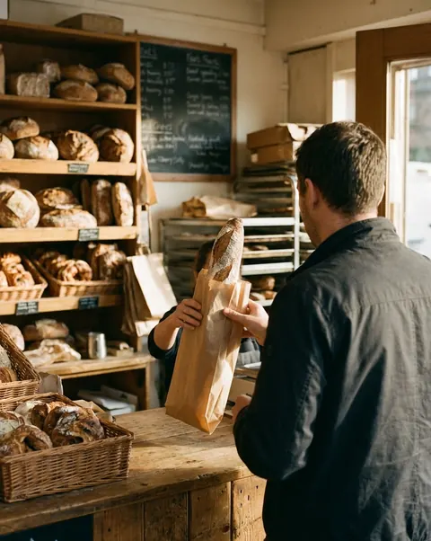

Forno di quartiere · Città di Prova
Prima sfornata, ogni mattina
Pane vero, all'alba.
Lievito madre, farine macinate a pietra e un forno che si accende quando la città dorme ancora.
Guarda il bancoIl metodo
Acqua, farina, sale e quarantotto ore di pazienza.

48ore di lievitazione
Il grano arriva intero e lo macina una pietra, piano, senza scaldarlo. Poi il lievito madre fa il resto, mentre noi aspettiamo. Zero additivi: se non lo puoi pronunciare, non entra nell'impasto.
0additivi, mai
-
Dal forno, oggi
Il banco.
Tre cose che finiscono prima di mezzogiorno. Il resto è nel listino.
-
 € 6,80 / kg
€ 6,80 / kgPagnotta di campagna
Crosta scura e croccante, mollica umida che dura tre giorni. Il nostro pane di sempre.
-
 € 2,50 il trancio
€ 2,50 il trancioFocaccia all'olio
Alta, con olio extravergine e sale grosso. Esce calda alle 11: di solito alle 11:20 è finita.
-
 da € 1,60
da € 1,60Colazione
Cornetti sfogliati a mano e maritozzi con la panna montata al momento.
-
Segale e noci, pizza rossa, ciambellone e altri nove.
Listino completo

Il laboratorio, di notte
Ogni pagnotta passa dalle nostre mani.
Impasto
Farina macinata a pietra, acqua e lievito madre rinfrescato nel pomeriggio.
Pieghe
Tre giri di pieghe a mano, poi l'impasto riposa al fresco per tutta la notte.
Forma
Ogni pagnotta si forma a mano: per questo nessuna è uguale all'altra.
Si sforna
Il forno a legna è caldo da un'ora. La prima infornata esce quando apre il banco.
Il lievito madre lo rinfreschiamo tutti i giorni. È l'unico collega che non va mai in ferie.
Prenota per domaniVieni a trovarci
Passa al banco.
| Lun | 7:00 – 13:30 |
|---|---|
| Mar – Ven | 7:00 – 13:30 16:30 – 19:30 |
| Sab | 7:00 – 19:30 |
| Dom | 8:00 – 12:30 |
